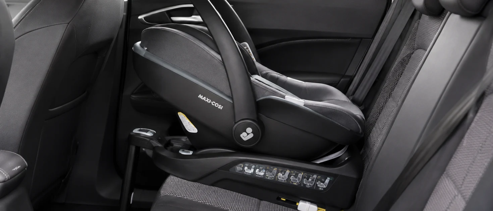
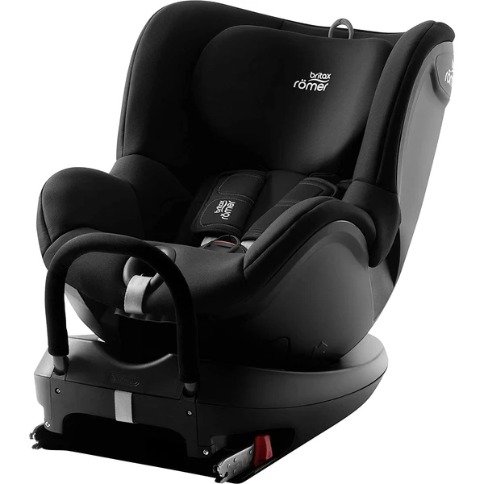
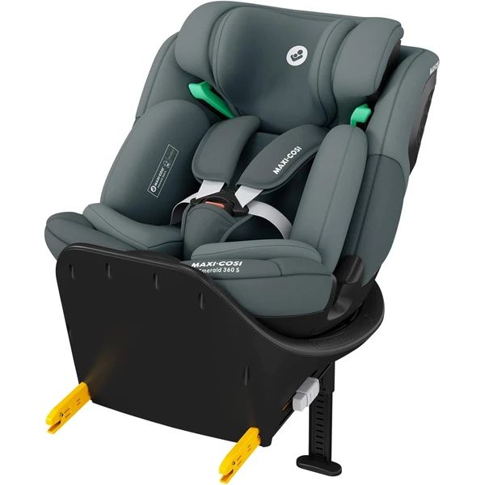

Viajar a contramarcha significa que el niño va sentado mirando hacia atrás, en sentido contrario a la marcha del coche. En caso de frenazo o impacto frontal, esta posición reparte la fuerza del impacto por toda la espalda, cuello y cabeza del niño, en vez de concentrarla solo en el cuello — que en bebés y niños pequeños todavía no tiene la fuerza muscular suficiente para soportarlo bien.
Existen dos referencias importantes: lo que exige la normativa (obligatorio) y lo que recomiendan los expertos en seguridad (recomendado).
La normativa exige la contramarcha hasta los 15 meses (con sillas i-Size), pero la recomendación de seguridad es mantener la contramarcha hasta los 4 años aprox. o el máximo que permita la silla.
Las sillas de Grupo 0+/1 y las evolutivas más completas suelen permitir contramarcha hasta los 4 años aproximadamente. Consulta también nuestras guías de grupo:
Compara las principales marcas de sillitas de coche y descubre sus diferencias antes de elegir la que mejor se adapte a tu familia.

Silla giratoria de Grupo 0+/1 con anclaje Isofix y pata de apoyo al suelo, pensada para viajar a contramarcha el mayor tiempo posible con la comodidad de poder girarla hacia la puerta.
Características principales
Lo que destacan las familias
Lo fácil que resulta girar la silla con un solo botón para colocar al bebé, junto con la estabilidad que da el anclaje Isofix y la pata de apoyo al suelo. Alguna reseña señala que, para un recién nacido, conviene tener en cuenta que el reductor no viene incluido de serie.

Silla evolutiva "todo en uno" que acompaña desde el nacimiento hasta los 12 años, con giro de 360° para facilitar la colocación del bebé sin forzar la espalda.
Características principales
Lo que destacan las familias
Sobre todo el giro de 360°, que facilita mucho colocar y sacar al bebé del coche sin tener que forzar posturas incómodas, además de la comodidad de los acolchados incluso para un recién nacido.
Ver también las guías completas de Britax Römer y Maxi-Cosi.
No hay evidencia de que resulte incómodo — los niños se adaptan bien a esta posición, y los estudios de seguridad vial la recomiendan precisamente por su beneficio protector.
No es recomendable — la normativa establece un mínimo por motivos de seguridad demostrados, no de comodidad.
No, depende del grupo y del modelo. Verifica siempre las especificaciones del modelo concreto.
Guía informativa de Lauderem. Los enlaces a productos llevan directamente a la ficha en Amazon.es.